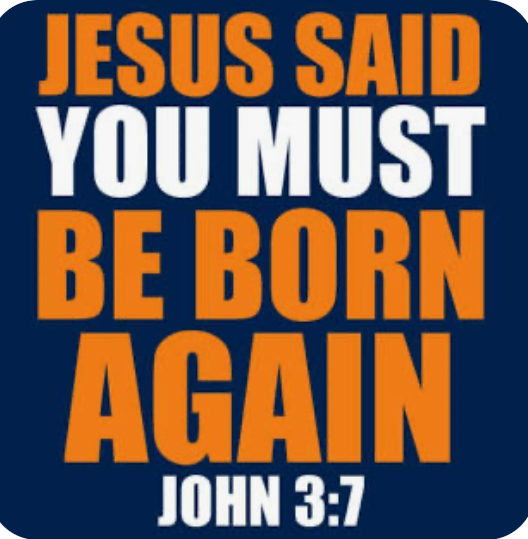
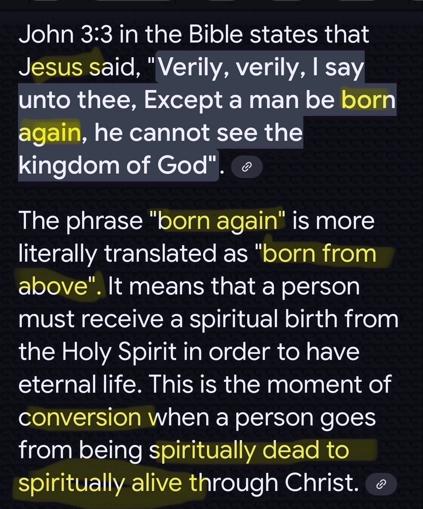
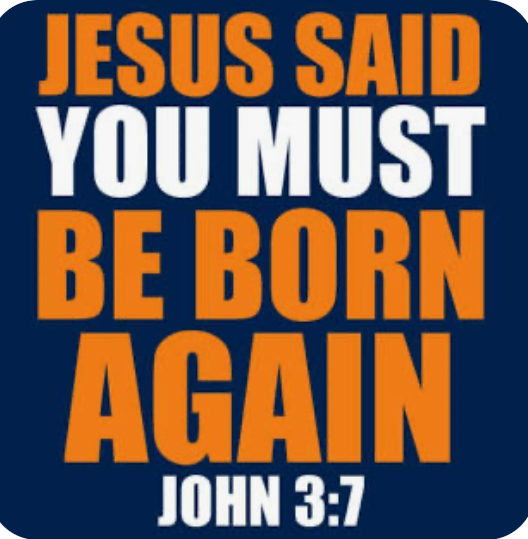
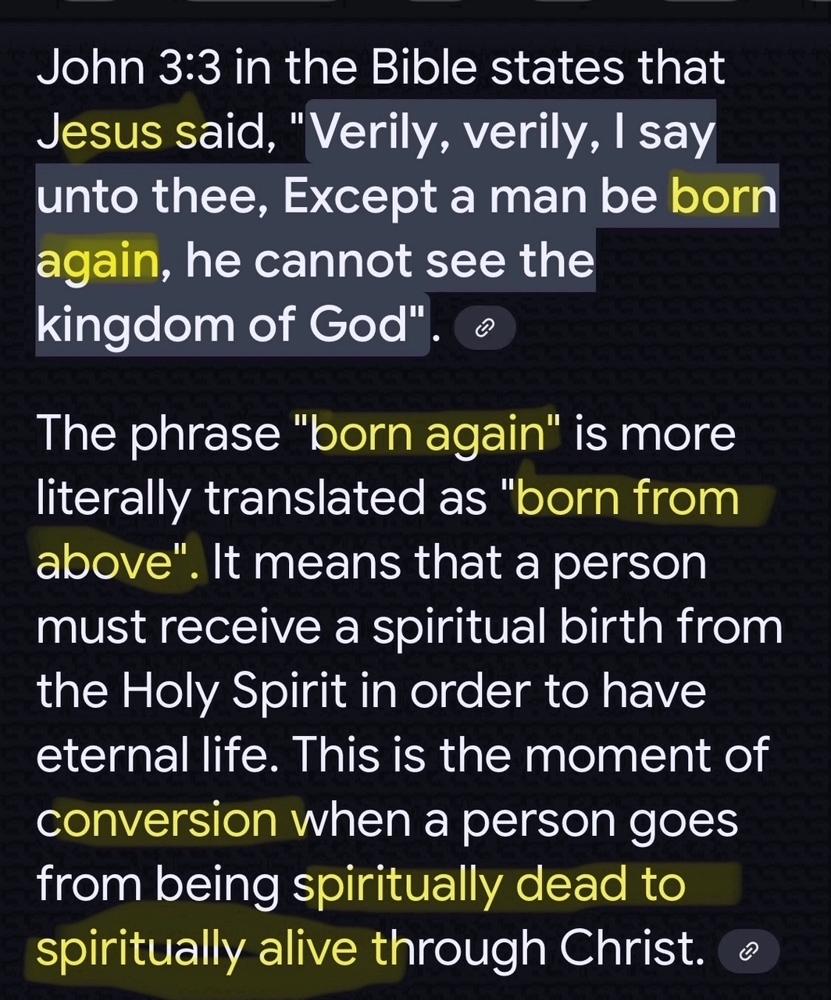
Let me ask you the most important question of your life...
Let's see what JESUS, the SON OF GOD, says in God's Holy Bible of TRUTH...
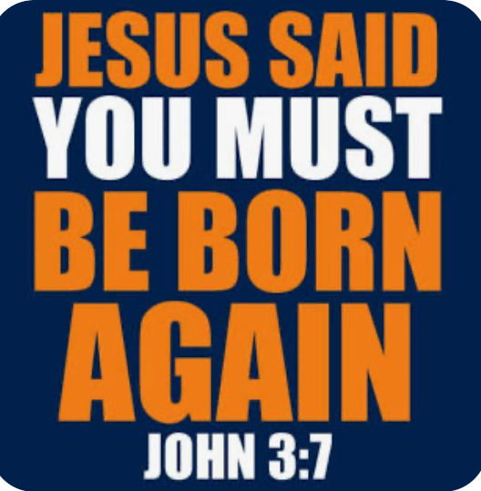
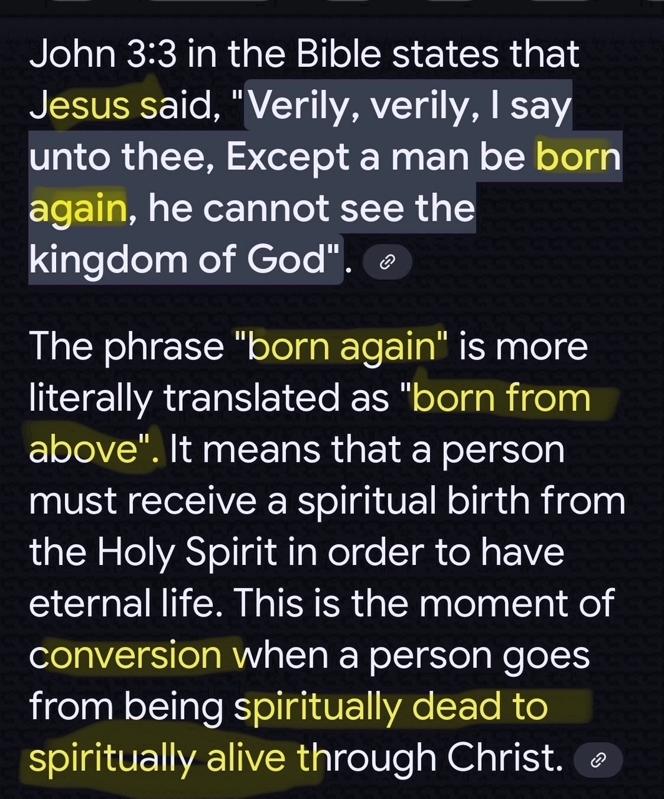
John 3:3 - Jesus replied, “Very truly I tell you, no one can see the kingdom of God unless they are born again.”
Jesus said you must be born again. This is not a religion. It is a life changed by God.
Truth is, we are all born into sin. We are all born as children of the devil. That is why we must be Born Again, where God gives us a new heart and makes us a new creation as a child of God.
2 Corinthians 5:17 - Therefore, if anyone is in Christ, the new creation has come: The old has gone, the new is here!
 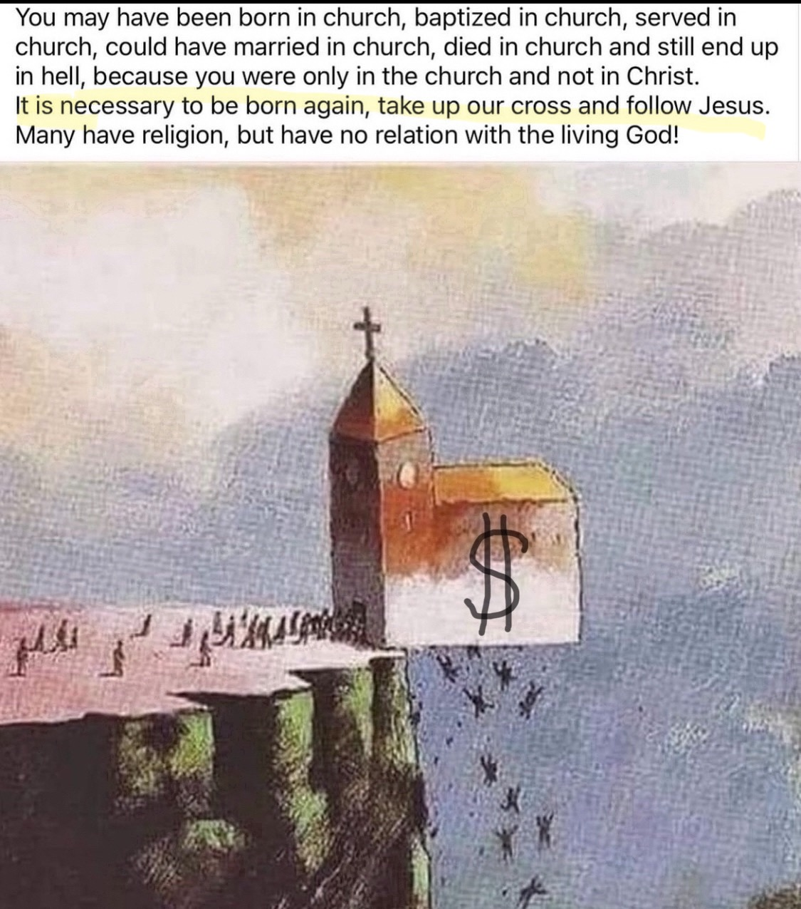
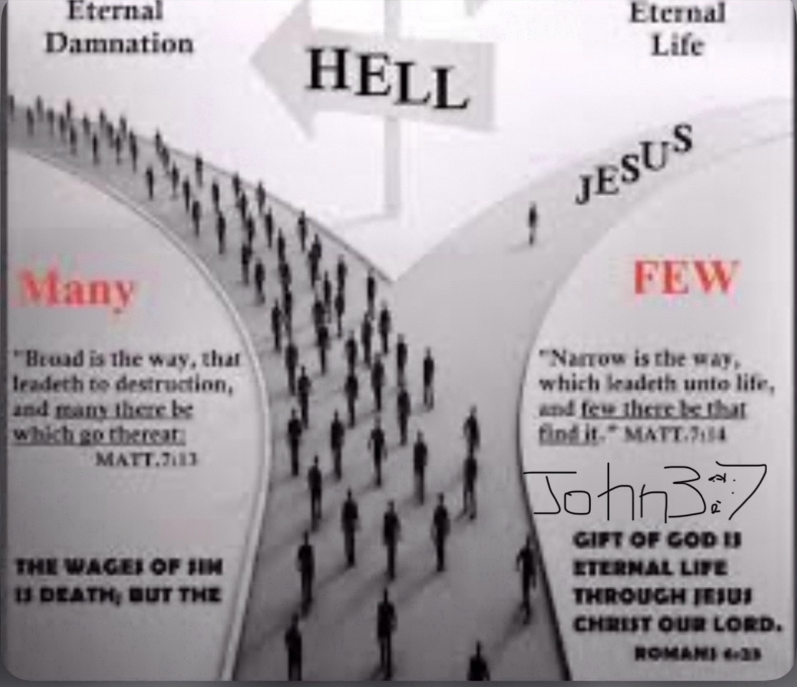
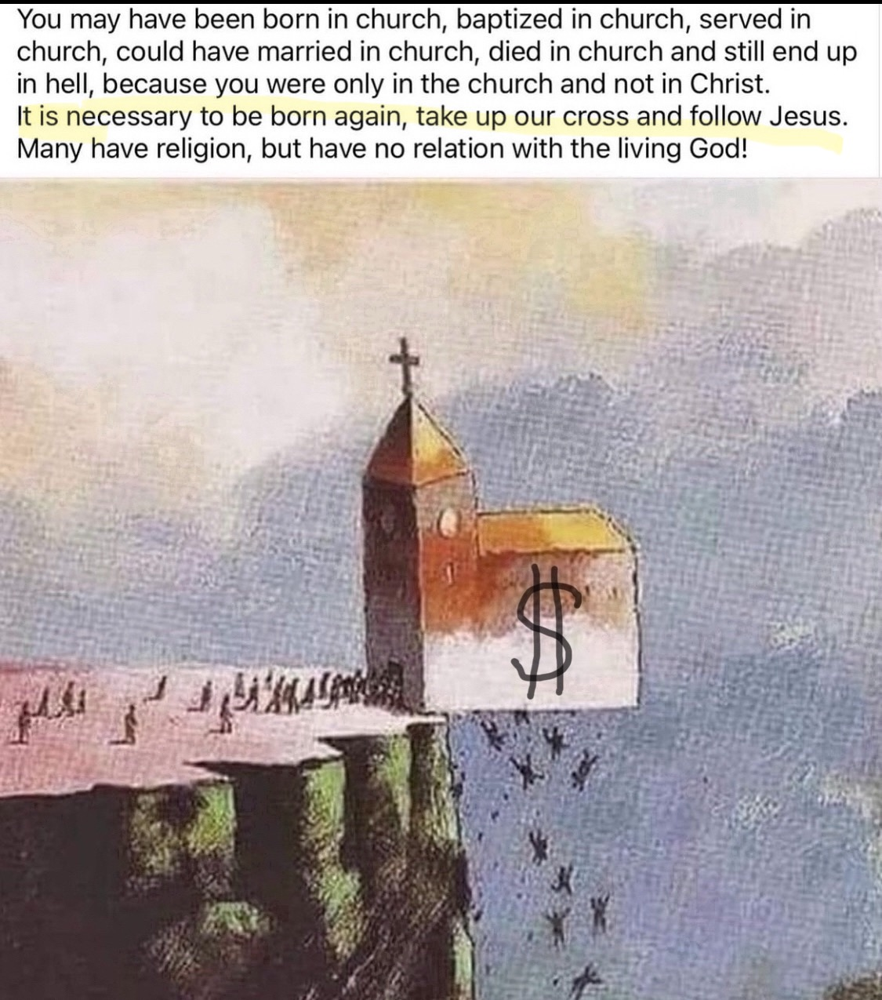
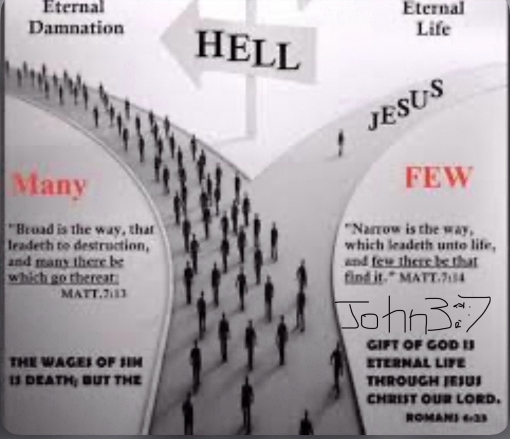
What is the difference between a Born Again, True Christian and a Religious, False "Christian?"
How can I know if I am Born Again?
Here are some "mind maps" to help. Take a look and see which path your life is on. Then you tell me, are you Born Again?

For those that prefer it explained in a video:
I've got bad news for you. You've been trusting in your own goodness, and you've deceived yourself.
Mark 10:18 - And Jesus said to him, “Why do you call Me good? No one is good except God alone.
Romans 3:23 - For all have sinned and fall short of the glory of God.
Let's take a look at the Ten Commandments and see how you measure up.
Have you ever lied? Stolen? Looked at someone with lust? Hated someone? Used God's name in vain?
If you answered yes to any of these questions, then you are guilty of breaking God's law, as has everyone else. You are a sinner. And the punishment for sin is death.
Romans 6:23a - For the wages of sin is death
Looks like you are not so good after all, huh? Nobody is "fine" or "good" or Heaven bound UNTIL ONE's HEART & MIND ARE CHANGED BY GOD's HOLY SPIRIT UPON BEING BORN AGAIN.


Jesus knew that ALL/MEN ARE BORN SINFUL / SELFISH, so He did "not entrust Himself to man," so you and I should ONLY ENTRUST OUR SALVATION BY CHRIST ALONE, not by a pastor, priest, baptism, church, or religion.
No! Church is NOT what saves you. Confession is NOT what saves you. Baptism is NOT what saves you. Jesus is the only way to Heaven.
John 14:6 - Jesus answered, “I am the way and the truth and the life. No one comes to the Father except through me.”
Before one can have true saving faith in Christ, one must first Repent / Turn From Sin / Self. Turn from the false faith of "good behavior," "good works," church attendance/affiliation, church "membership," faith in a pastor's baptism, faith in church "confirmation," charitable donations, etc.
Turning from false faith in what everyone / everything you can see, humbly repenting / turning from your sins, surrendering your heart / life to Christ, and trusting only in salvation by Christ alone that is unseen.
Ephesians 2:8-9 - For by grace you have been saved through faith, and that not of yourselves; it is the gift of God, not of works, lest anyone should boast.
Romans 6:23 - For the wages of sin is death, but the free gift of God is eternal life in Christ Jesus our Lord.
Water baptism is an outward public proclamation in water of going from "death to life", being buried in death and raised to new life in Christ. It is meant to be a symbol of already being Spiritually reborn BEFORE WATER BAPTISM.
Pastors often baptize people, even youth or infants, without examining or even asking them if they have been born again. This is why most people that are baptized by pastors today, to become a "member" of their church, GET WET... BUT NOT SAVED. They tragically have a false faith in just water baptism and "church membership" that can have ETERNAL CONSEQUENCES.
Unfortunately, many churches are leading people to hell by omitting the truth. They are not preaching the true gospel of Jesus Christ that leads to repentance and salvation.
 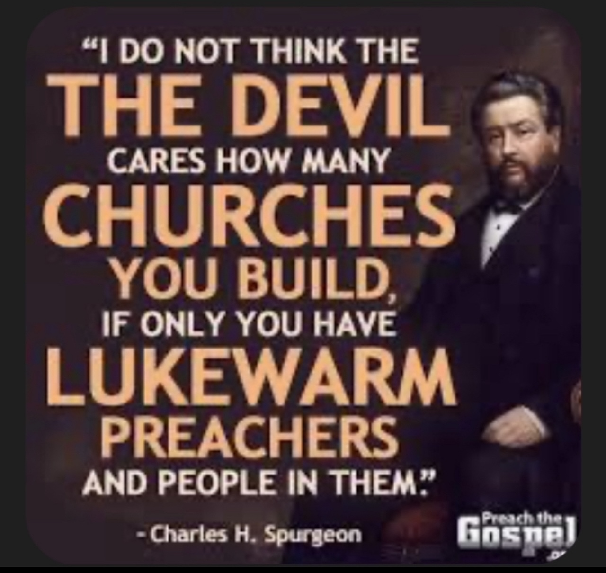
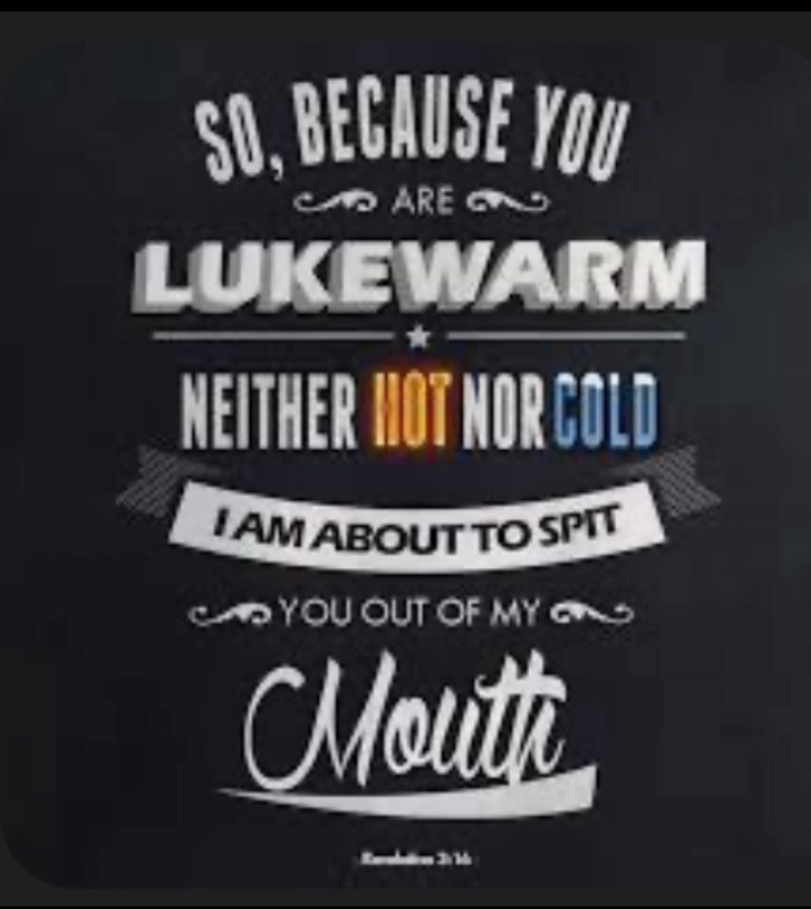
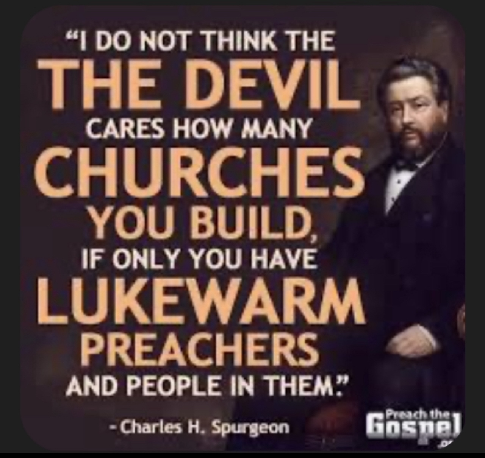
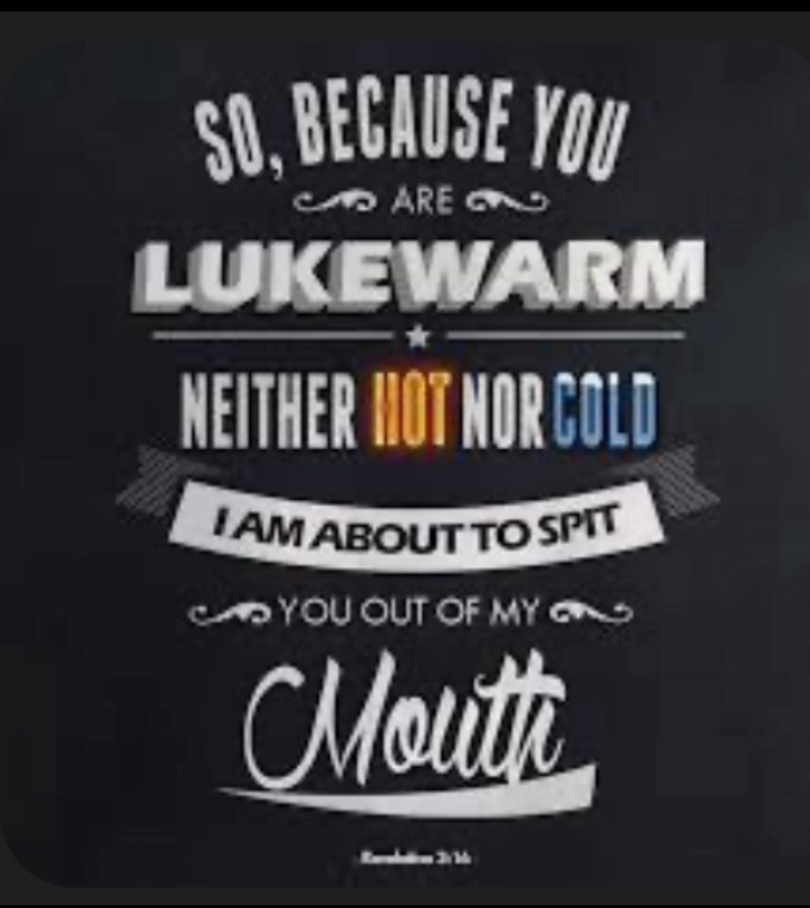

Many churches are more concerned about not offending people than preaching the truth of the gospel. They are more concerned about money and filling seats rather than preaching the truth of the gospel.
Let's see what the Bible says...
What is your source of TRUTH?" Yourself?, parents?, pastors?, philosophers?, internet?, ...or the Word of God, the Holy Bible? You were born trusting YOURSELF, your Greatest Enemy, because you are a SINNER by nature and choice, violating your God-given conscience, SO YOU LIE TO YOURSELF. Therefore, we all need a source of Truth that we can TRUST 100%, the Bible, which teaches to LIVE THE OPPOSITE OF THE WAYS OF THE WORLD.
Galatians 1:10 - Am I now trying to win the approval of human beings, or of God? Or am I trying to please people? If I were still trying to please people, I would not be a servant of Christ.
Jesus calls us to be different from the world. We are called to be set apart. That is why we must leave our old life behind. We must be born again.

 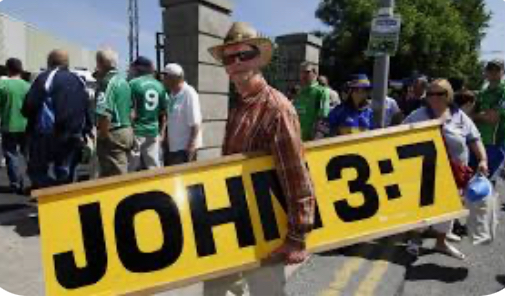
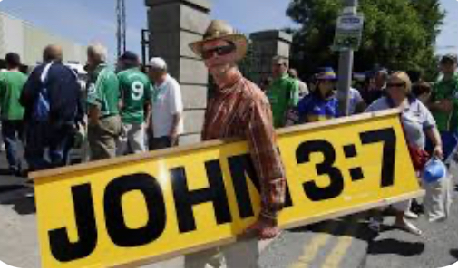


The Bible says that even the demons believe. But they are not saved.
James 2:19 - You believe that there is one God. Good! Even the demons believe that—and shudder.
True faith is a faith that produces good works. The Holy Spirit is what changes your life when you are born again. That change gives you true saving faith in Christ.
Matthew 7:16-20 - By their fruit you will recognize them. Do people pick grapes from thornbushes, or figs from thistles? Likewise every good tree bears good fruit, but a bad tree bears bad fruit. A good tree cannot bear bad fruit, and a bad tree cannot bear good fruit. Every tree that does not bear good fruit is cut down and thrown into the fire. Thus, by their fruit you will recognize them.
It means that you have a new heart and a new spirit. You are no longer the same person you were before.
It means that you are no longer living for yourself. You are now living for God.
Like a butterfly, you have been transformed from a caterpillar into a new creation. You are no longer the same person you were before.
The image below outlines the first steps to becoming Born Again.
James 4:7-10 - Submit therefore to God. Resist the devil and he will flee from you. Draw near to God and He will draw near to you. Cleanse your hands, you sinners; and purify your hearts, you double-minded. Be miserable and mourn and weep; let your laughter be turned into mourning and your joy to gloom. Humble yourselves in the presence of the Lord, and He will exalt you.
It is an act of God that gives you a new heart and makes you a new creation as a child of God. It is not something you can do on your own. But you must be willing to repent and surrender your life to Him.
The images below outline how churches should be. It is a great example of what it means to be a church that preaches the true gospel of Jesus Christ.
This is a scene from the movie Jesus of Nazareth, depicting Jesus' conversation with Nicodemus in John Chapter 3. It is a great example of what it means to be born again for all you visual learners out there.
If you are not sure if you are born again, I encourage you to take a moment and pray. Ask God to show you the truth. Seek Him earnestly with all your heart that you may find Him and have a true relationship with God.
Jeremiah 29:12-14 - "Then you will call upon Me and come and pray to Me, and I will listen to you. You will seek Me and find Me when you search for Me with all your heart. I will be found by you", declares the LORD, "and I will restore your fortunes and will gather you from all the nations and from all the places where I have driven you," declares the LORD
Matthew 7:7-8 - “Ask, and it will be given to you; seek, and you will find; knock, and it will be opened to you. For everyone who asks receives, and he who seeks finds, and to him who knocks it will be opened.
If you are already born again, I encourage you to share this message and your testimony with others. Share the truth of the gospel with those who are lost and need to hear it. Fulfill the Great Commission, so that others may hear the truth and be saved.
Matthew 28:18-20 - And Jesus came up and spoke to them, saying, “All authority has been given to Me in heaven and on earth. Go therefore and make disciples of all the nations, baptizing them in the name of the Father and the Son and the Holy Spirit, teaching them to observe all that I commanded you; and lo, I am with you always, even to the end of the age.”
Romans 10:14-15 - How then will they call on Him in whom they have not believed? How will they believe in Him whom they have not heard? And how will they hear without a preacher? But how are they to preach unless they are sent? Just as it is written, “How beautiful are the feet of those who bring good news of good things!”
To schedule one of our laymen born again evangelists to speak at your live event, email event details to Doc at: lifecoachdoc@yahoo.com
To wrap it up, Billy Graham and Dr. Charles Stanley explain what it means to be born again in these two different sermons. I encourage you to watch them both.
We pray that this message has been a blessing to you and an encouragement to you in your walk with Christ.